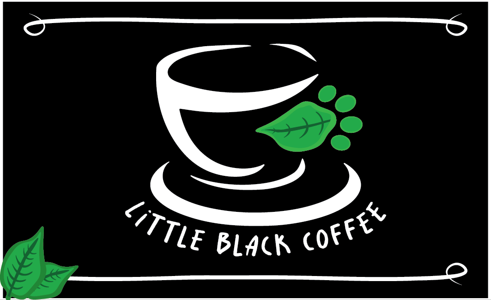
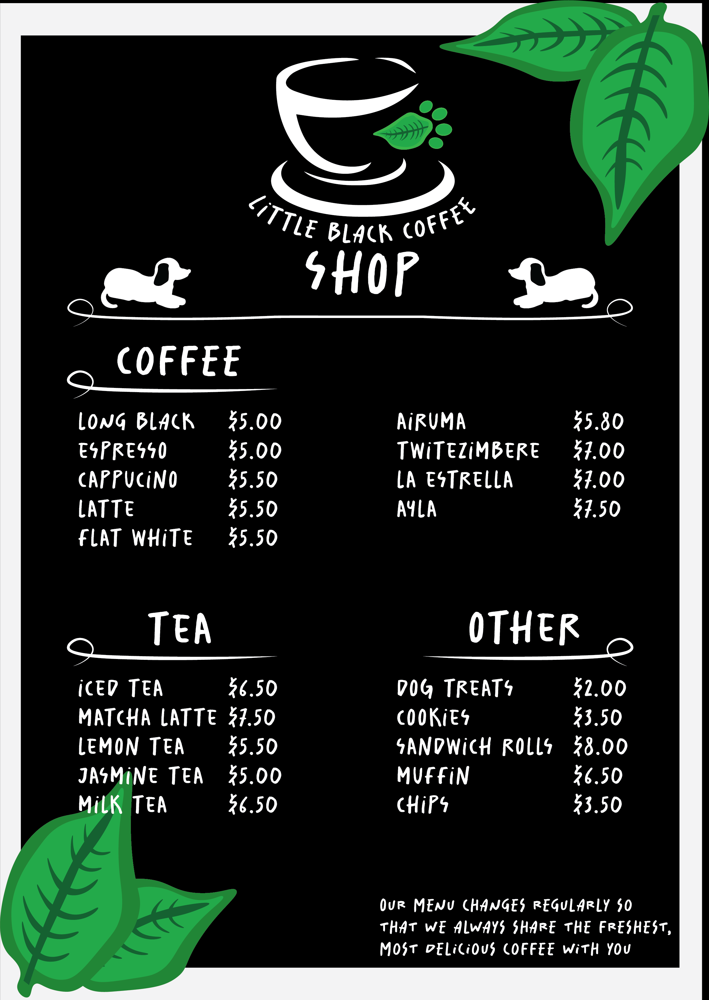
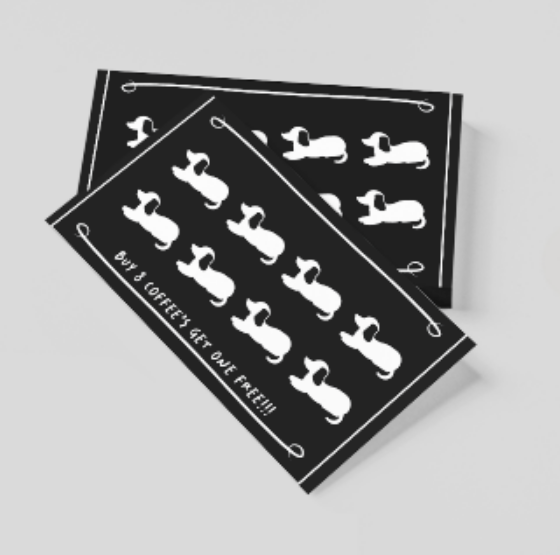
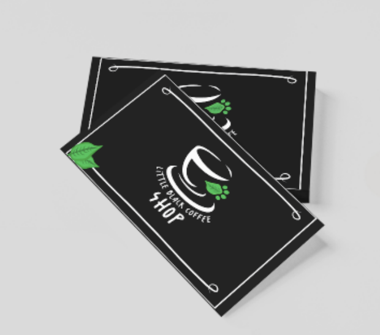
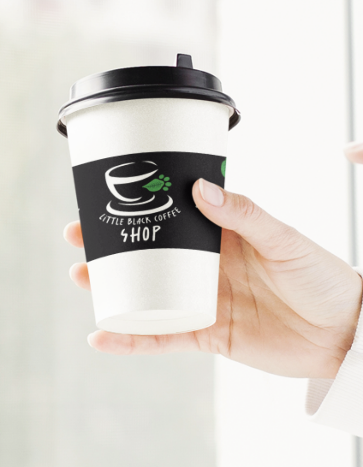
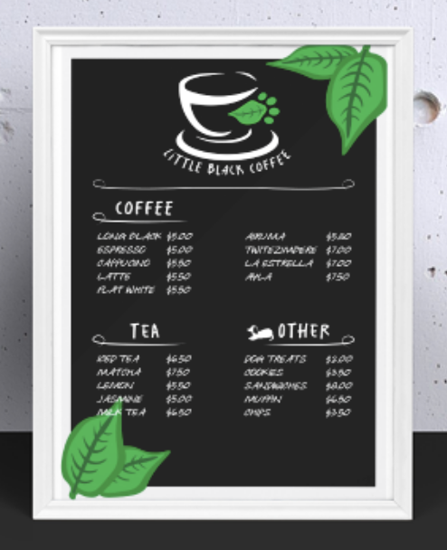
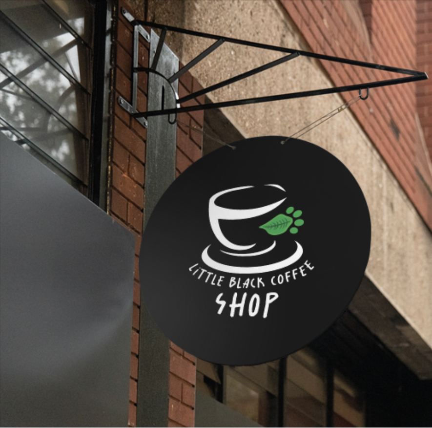
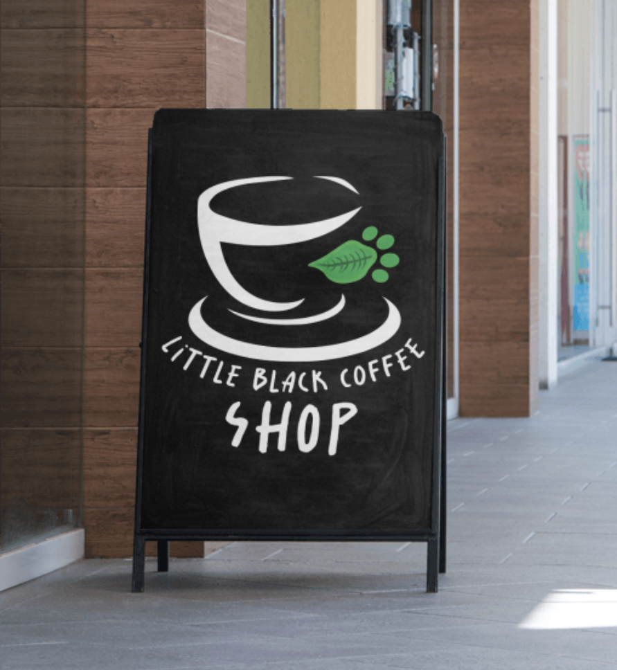
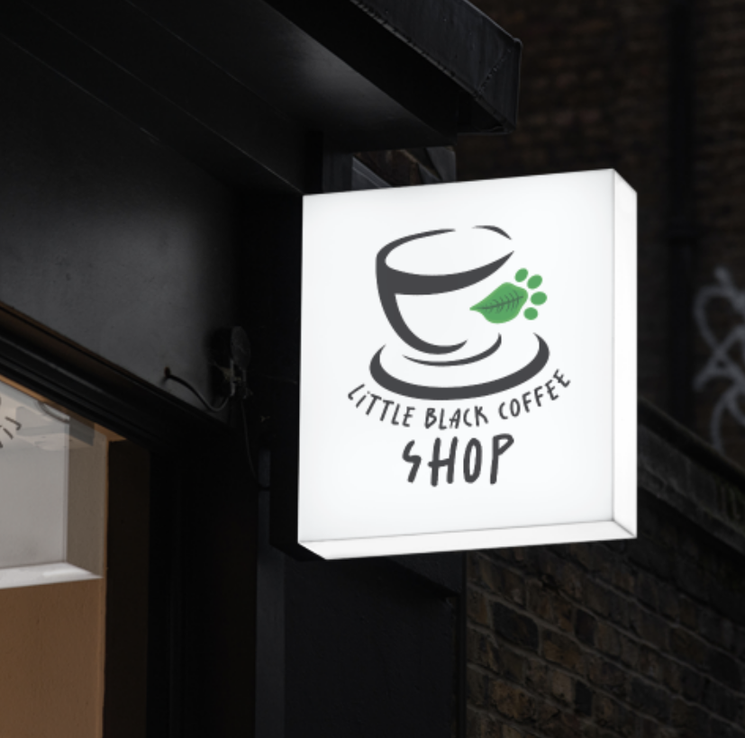

This was a university project where we were tasked to rebrand an existing coffee shop with my selection being Little Black. One thing I had drew inspiration from was where the store was situated which was in front of a large park and one key feature it had was its catering towards the pet owners and dog walkers in that park. This was something I had included into the design of the handle which mimics a dogs paw in a leaf form. Of course I had to stick with the primary color being black as that is the main feature of the shop but I feel adding these small hints of its lesser known features will draw in more curiousity for the brand.
#Branding #UniProjects #CoffeeShop